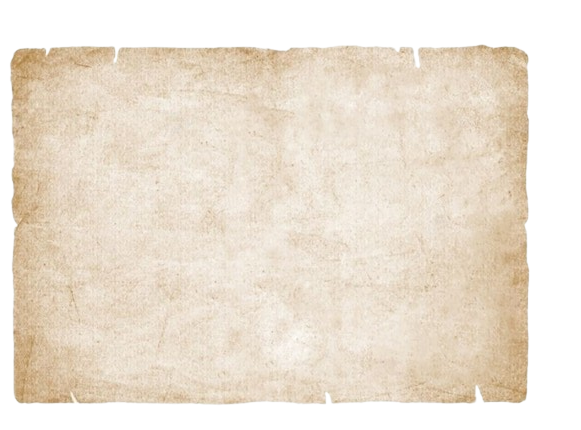
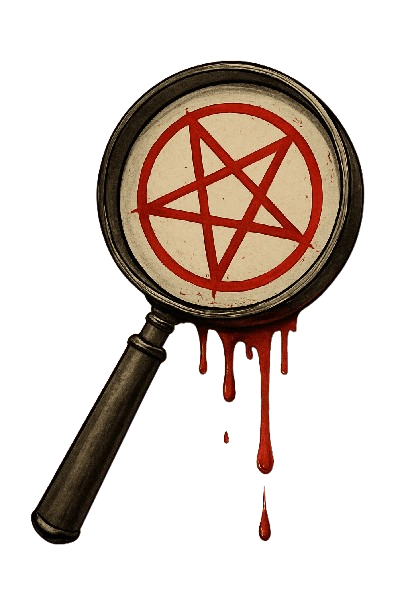
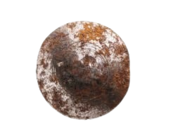
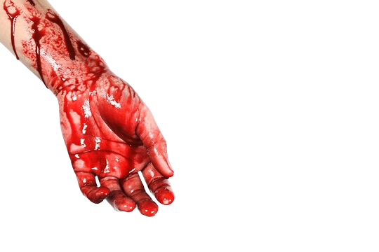
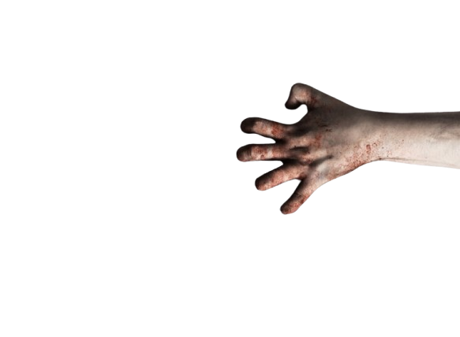
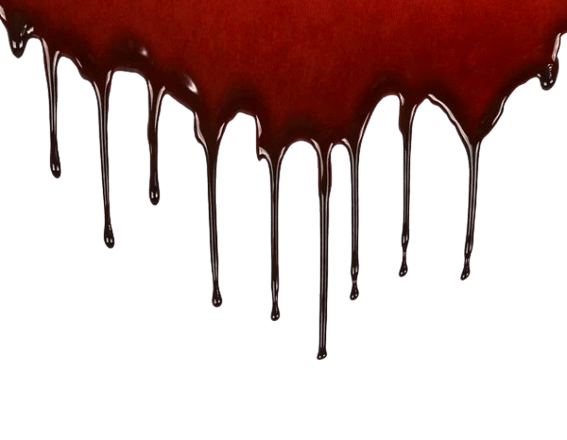
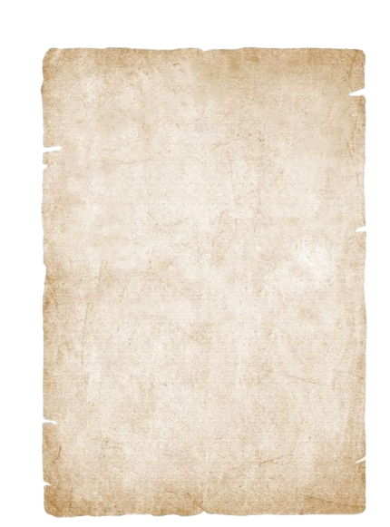
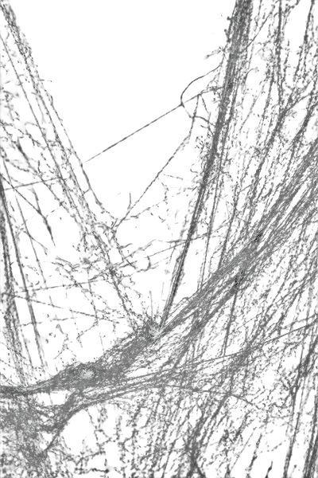
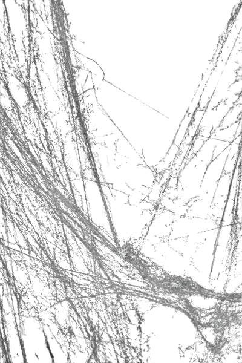
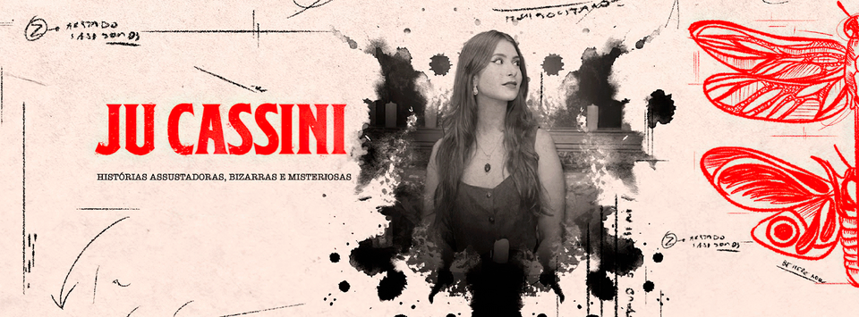

Instagram
Twitter
Youtube
Pesquisar



Podcasts

Ju Cassini é uma podcaster que fala sobre casos reais de crimes, mistérios
e histórias de terror junto do sobrenatural.
Ela traz relatos intrigantes e discussões sobre o lado obscuro da natureza humana.